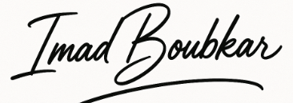

Bewerbung als IT-Entwickler
Imad Boubkar,den 25.10.2025
Sehr geehrte Damen und Herren,
Ich bin ein vielseitiger Allrounder mit Schwerpunkten in Java, Webentwicklung und Datenbanken. Besonders liegt mir die Entwicklung von nützlichen Anwendungen am Herzen, die den Alltag erleichtern und Prozesse optimieren.
Ich arbeite strukturiert und bin bereit, alles zu lernen ,was die moderne IT mit sich bringt
Da ich ihr Interesse geweckt habe, finden Sie weitere Details auf den folgenden Seiten.
Mit freundlichen Grüßen
Imad Boubkar
